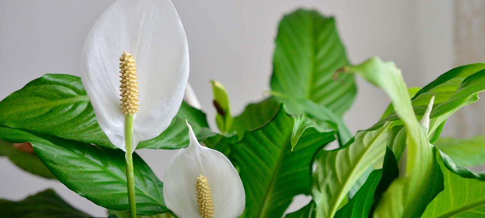
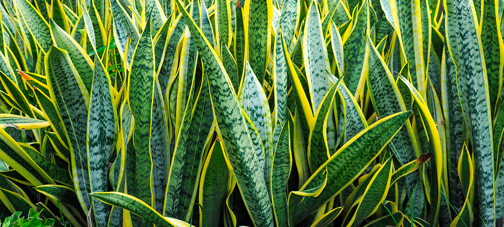
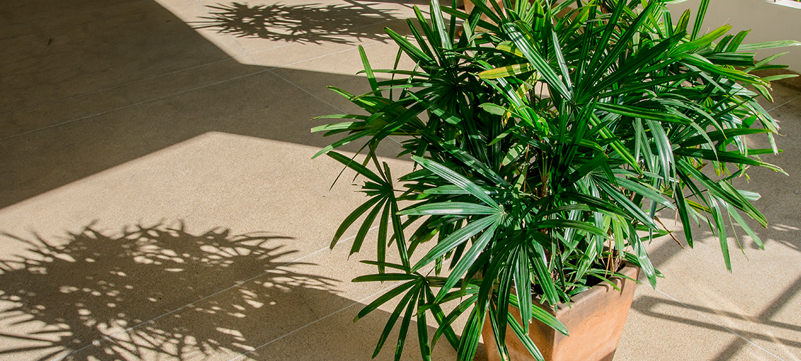
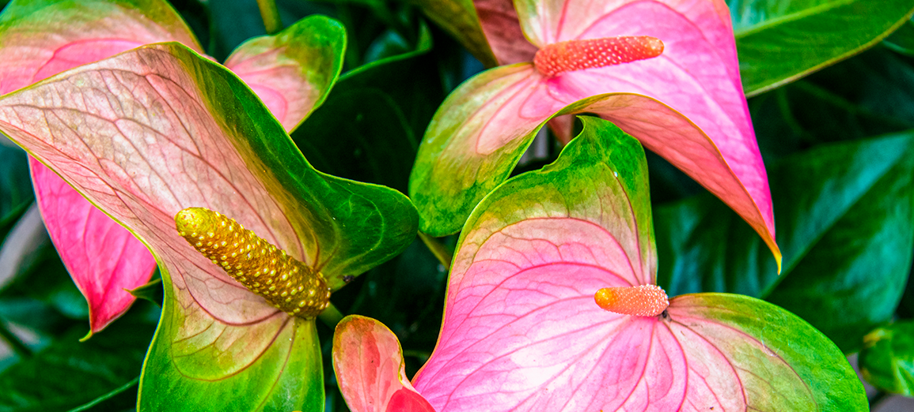

Lírio da paz

Ela tem uma grande capacidade de filtrar o ar,
absorvendo diversos poluentes e até mesmo a fumaça de cigarro.
Além disso, o lírio da paz tem uma flor muito bonita,
sendo ótimo também para decorar o ambiente.
Esta planta precisa de pouca luz e pouca água para se
desenvolver bem. Não é recomendado que ela fique em locais
com muita corrente de ar e com temperaturas muito baixas.
Espada de São Jorge

Essa planta que ajuda a purificar o ar da casa é a espada de São Jorge,
que, além de liberar oxigênio durante a noite, absorve substâncias
tóxicas como benzeno, xileno, formaldeído, tolueno e tricloroetileno. Muito usada para fins decorativos, a planta é originária da África e
suporta temperaturas extremas, altas ou baixas.
Palmeira-bambu

A palmeira-bambu, originária de Madagascar, também é
conhecida como areca bambu. Ela é versátil, fácil de ser
cuidada e pode ser usada tanto em ambientes internos quanto
externos.
Dentro de casa, a dica é colocar a palmeira-bambu perto
de armários, pois ela tem a propriedade de absorver
substâncias tóxicas liberadas por tecidos de roupas.
Antúrio

Muito utilizado em decoração, o antúrio chama a
atenção por suas folhas com um verde intenso e pelas folhas
modificadas na cor avermelhada. A planta vai
bem em ambientes internos, bem iluminados mas
sem luz direta e sem muito vento. Quanto à sua
ação purificadora, o antúrio é ideal para absorver a amônia.
Essas são algumas plantas que ajudam a purificar o ar da casa,
além de trazer mais beleza para o décor.